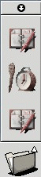
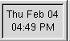

Добавление приложений и апплетов к панели
Добавление кнопок запуска приложений
Чтобы добавить к панели кнопку запуска приложения (пиктограмму, которая запускает какое-то приложение), щелкните правой кнопкой мыши внутри панели и выберите в появившемся меню Добавить новую кнопку запуска. На экране появится диалог, в котором вы можете задать требуемые свойства кнопки запуска.
Рисунок 4-3. Диалог создания кнопки запуска

В диалоге создания кнопки запуска вы можете выбрать имя для новой кнопки, комментарий и команду, которая будет использоваться для запуска приложения. Вы также можете выбрать пиктограмму для вашего приложения, нажав кнопку Пиктограмма; если вы этого не сделаете, то будет использована некоторая стандартная пиктограмма.
Имеется также другой, более быстрый способ добавить кнопку запуска приложений к панели. А именно, если щелкнуть правой кнопкой мыши на имя любого приложения в главном меню, то появится всплывающее меню, в котором будет пункт Добавить эту кнопку запуска на панель. Если вы выберете этот пункт меню, то кнопка запуска этого приложения будет немедленно добавлена к панели (если панелей несколько, то к той, главным меню которой вы пользовались). После этого вы можете щелкнуть правой кнопкой мыши на эту кнопку запуска и выбрать в появившемся меню Свойства, чтобы изменить любые свойства этой кнопки.
Ящики
Вы можете также создать на панели GNOME кнопку, которая может быть использована для запуска нескольких различных приложений. Такая кнопка называется "ящик". Если щелкнуть на него мышью, то он "выдвинется". В выдвинутом состоянии ящик выглядит как меню из нескольких кнопок запуска. Чтобы задвинуть ящик, щелкните на него еще раз.
Рисунок 4-4. Выдвинутый ящик

Есть несколько способов добавить к панели ящик. Самый простой из них - это щелкнуть внутри панели правой кнопкой мыши и выбрать Добавить ящик в появившемся меню. Вы также можете добавить к панели в качестве ящика одно из дочерних меню: для этого надо щелкнуть правой кнопкой мыши в заголовке этого меню и выбрать Добавить эту кнопку как ящик на панель в появившемся меню.
Аналогичным образом вы можете добавить к панели и еще одно меню. Например, чтобы добавить одно из дочерних меню как новое меню к панели, следует щелкнуть правой кнопкой в заголовке этого меню и выбрать Поместить это меню на панель. Как вы можете видеть, ящики и меню во многом схожи; главная разница между ними состоит в том, что кнопки запуска, содержащиеся в ящике, показываются как большие пиктограммы, в то время как элементы меню выглядят как текст с маленькими пиктограммами. Вы также можете добавить любой каталог вашей системы в качестве меню к панели: для этого достаточно просто перетащить его из окна диспетчера файлов GNOME на панель.
Добавление апплетов
Другой тип объектов, которые могут быть добавлены к панели GNOME - это апплеты, или приложения, которые работают в маленьком окне, помещаемом на панель. В комплект поставки GNOME входит большое число таких апплетов, которые подробно обсуждены в . В качестве примера мы опишем, как вы можете добавить к панели еще один апплет часов.
Щелкните правой кнопкой мыши внутри панели.
Выберите в появившемся меню Добавить апплет .
На экране появится дочернее меню
Выберите в нем Утилиты | Часы.
Апплет-часы будет добавлен к панели.
Рисунок 4-5. Апплет-часы

Чтобы удалить этот апплет с панели, щелкните на него правой кнопкой мыши и выберите Удалить с панели в появившемся меню.